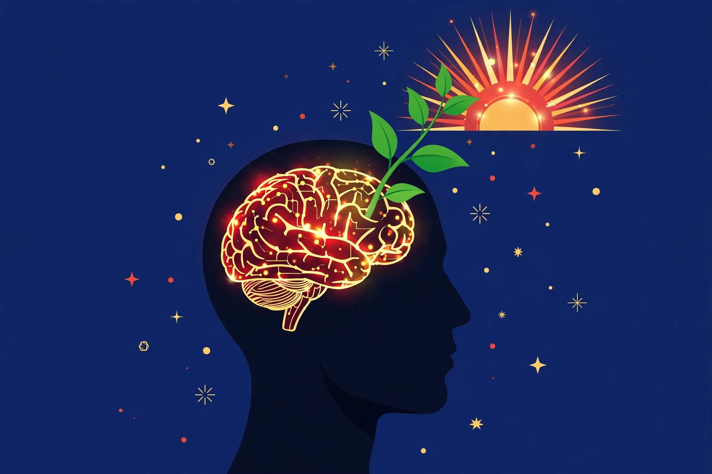

Penguatan Inkuiri Kolaboratif & Growth Mindset • 2 × 45 menit
DARING
Merancang pembelajaran yang mendalam, bukan sekadar administratif
Teknologi sebagai penguat interaksi kelas
Berkesadaran, bermakna, menggembirakan
Fondasi mental guru dan murid untuk bertumbuh
"Pendekatan reflektif berbasis data yang dilakukan secara sistematis oleh pendidik untuk memahami, menganalisis, dan memperbaiki praktik pembelajaran melalui kerja sama dalam komunitas profesional."
Mengidentifikasi masalah pembelajaran berbasis data
Merancang strategi perbaikan secara kolaboratif
Melaksanakan strategi & mendokumentasikan hasilnya
Mengukur hasil, merefleksikan, lalu memperbaiki lagi
| Aspek | Kelompok Administratif (Lama) | Komunitas Belajar Profesional / PLC (Baru) |
|---|---|---|
| Fokus | Administrasi & perangkat ajar | Mutu pembelajaran & hasil belajar murid |
| Budaya | Koordinasi rutin, manajerial | Kolaborasi profesional berkelanjutan |
| Kegiatan | Diskusi umum, minim dampak ke kelas | Belajar bersama & inkuiri sistematis |
| Keputusan | Asumsi & instruksi top-down | Refleksi berbasis data & bukti nyata |
| Kepemimpinan | Administratif & hierarkis | Kolektif — semua berperan aktif |
| Inovasi | Mengikuti pola yang ada | Tumbuh dari dalam komunitas |
Tujuan: peserta mampu menerapkan pola pikir bertumbuh dalam pembelajaran.
Cara seseorang memandang kesulitan & kegagalan ternyata sangat dipengaruhi
cara mereka memandang kemampuan dirinya sendiri.
Bagaimana gambaran umum profil pola pikir murid di kelas/sekolah Bapak/Ibu?
Apa yang harus dilakukan bila pemetaan menunjukkan lebih banyak PPT daripada PPB?
Masalah apa yang sering terjadi sebagai dampak pola pikir tetap?

"Kumpulan keyakinan yang menentukan cara seseorang melihat dan berpikir terhadap sebuah kejadian atau peristiwa."
Sederhana, tapi dampaknya ke seluruh hidup — termasuk ke kelas kita.
Cara memandang tantangan & kegagalan
Mendikte apa yang dilakukan — menyerah atau mencoba lagi
Menentukan apa yang diperoleh pada akhirnya
Pola pikir adalah cara melihat & berpikir saat menghadapi masalah — ia memperluas cara seseorang memandang dunia.
Keyakinan bahwa kecerdasan & keterampilan bersifat tetap — tidak banyak bisa diubah.
"Saya memang tidak berbakat matematika."
Keyakinan bahwa kecerdasan & keterampilan bisa dikembangkan lewat belajar & usaha.
"Saya belum bisa — belum."
Belajar mengenali Suara PPT dalam diri
Sadari bahwa kita punya pilihan
"Berbicara kembali" dengan Suara PPB
Bertindak sesuai Suara PPB
| 🔒 Suara Pola Pikir Tetap (cemas menghadapi tantangan) | 🌱 Suara Pola Pikir Bertumbuh (optimis menghadapi tantangan) |
|---|---|
| "Kalau gagal berarti saya tidak mampu." | "Kalau gagal berarti saya harus belajar lalu mencoba lagi." |
| "Saya tolak tugas baru — risiko gagalnya besar." | "Saya terima — ini peluang belajar & berkembang." |
| "Kesalahan = kelemahan, harus dihindari demi nama baik." | "Kesalahan = proses belajar & peluang meningkatkan diri." |
| "Saya hanya bagus di bidang tertentu." | "Saya bisa belajar apa pun, sesulit apa pun." |
| "Kecerdasan menentukan sukses." | "Belajar & usaha menentukan sukses." |
"Saya belum bisa — belum."